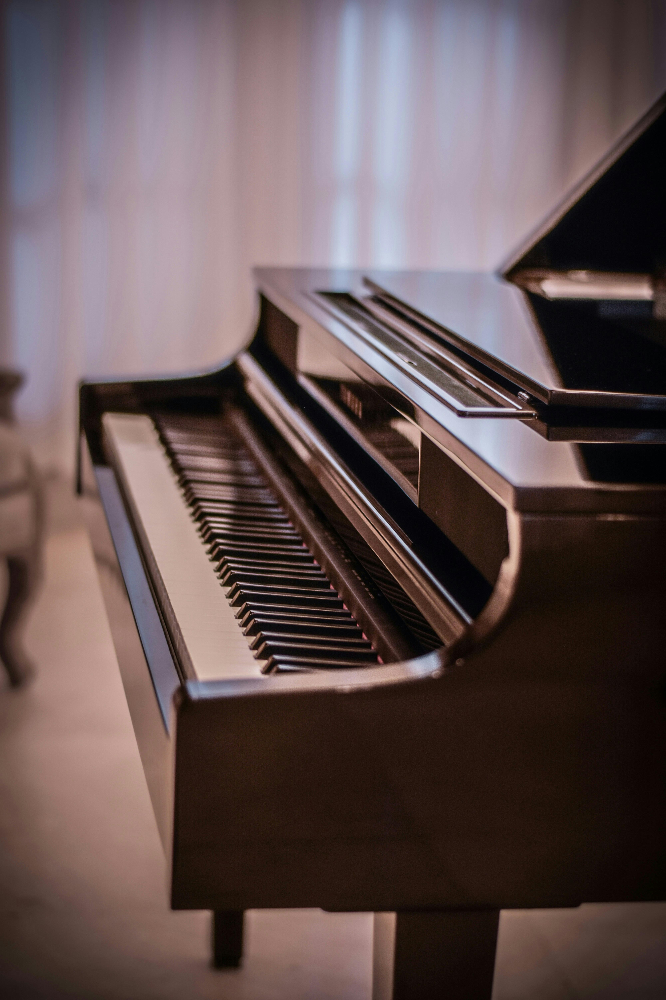
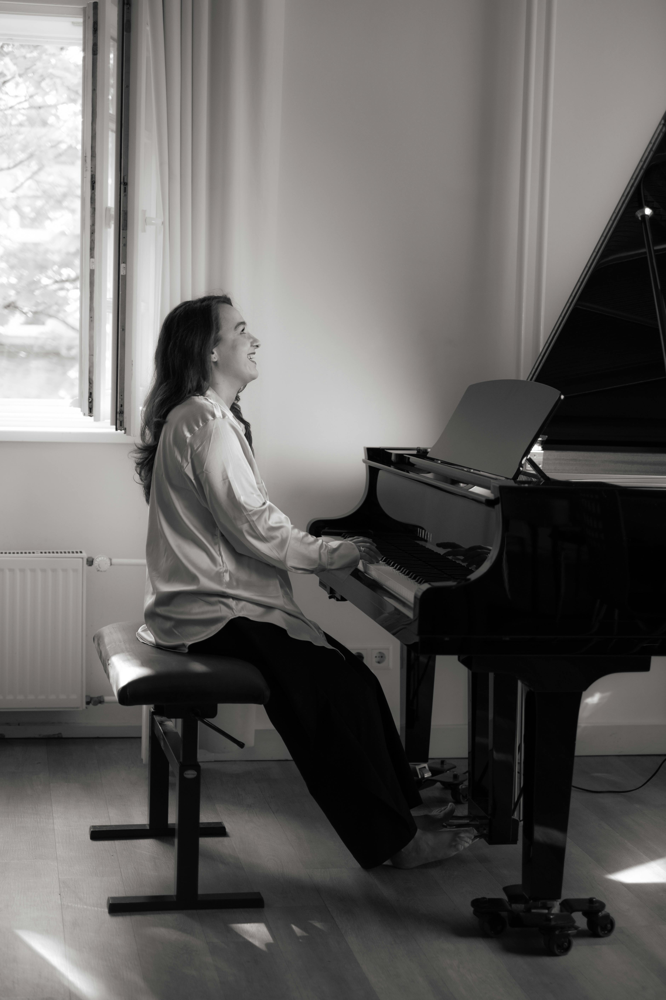

Annonces Piano
Retrouvez ici une sélection de pianos d'occasion à vendre autour de Monaco, Beausoleil, Cap-d'Ail, Roquebrune-Cap-Martin, Menton et Nice.
Je vous conseille toujours de regarder en premier lieu les pianos acoustiques, et en second lieu les pianos numériques (88 touches lestées et pédalier au minimum).
Contactez directement les vendeurs pour vérifier que le piano est toujours disponible : les annonces changent vite, mais certains pianos restent aussi plusieurs mois sans repreneur, alors tentez votre chance !
Je me tiens bien sûr à votre disposition pour vous accompagner chez le vendeur, essayer le piano et vérifier son état avant votre achat.
Annonces relevées le 21 août 2026 — les prix et la disponibilité sont à confirmer auprès du vendeur.


